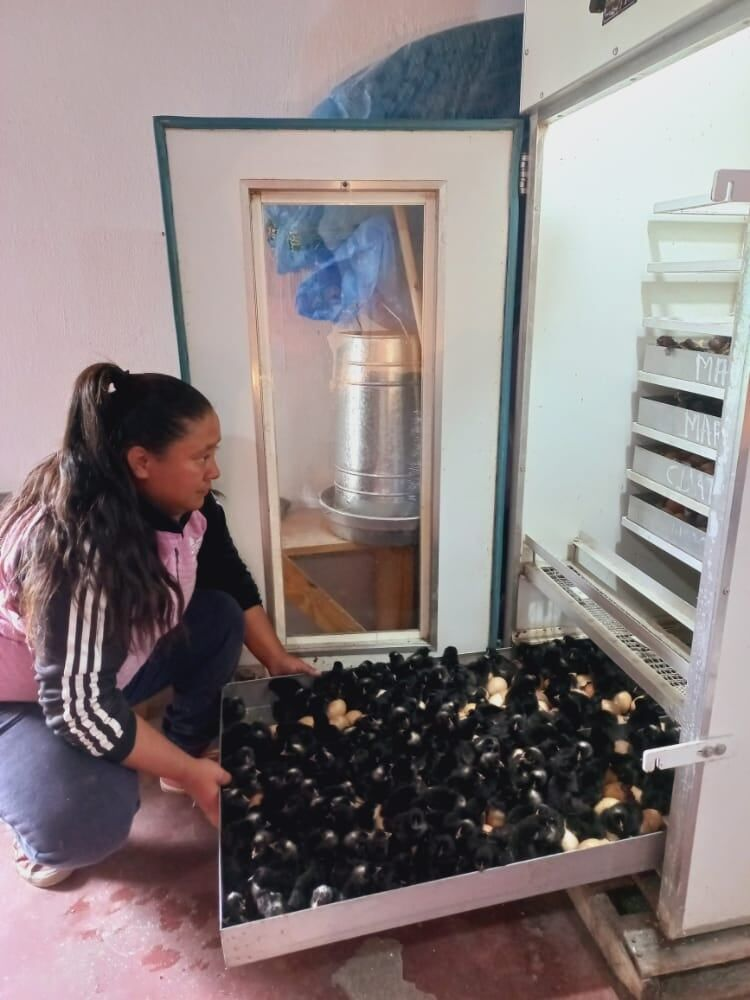

LibreIncu: incubadora libre para la producción avícola familiar
La incubadoraIncubá 150 huevos con temperatura, humedad y rotación automáticas, y seguí todo desde el celular.
Una incubadora que controla sola la temperatura, la humedad y la rotación de los huevos. Se maneja desde el celular y está hecha con hardware y software libres.
Las incubadoras comerciales suelen ser inaccesibles por su costo o están diseñadas para hobbistas. LibreIncu está pensada para quienes producen.
Para producir sus propios pollitos con la genética que elijan, sin depender de comprar el pollito bebé.
Para organizar en el territorio la reproducción de sus propias aves.
Para acompañar proyectos de producción avícola familiar y agroecológica.
Planos, electrónica, firmware y app están publicados: se puede entender, reparar y adaptar.
Usa piezas disponibles en el mercado y fáciles de reemplazar.
Con la app LibrePollo ves y ajustás temperatura, humedad y rotación en cualquier momento.
Se fabrica en el territorio, cerca de quienes la usan.
Hasta 150 huevos en tres bandejas desmontables. La incubadora mantiene sola la temperatura, la humedad y los gira.
Te conectás a la red WiFi de la incubadora y desde LibrePollo ves los valores, los cambiás y recibís avisos.
Al final del ciclo los huevos pasan a la nacedora, con lugar para 50.
Muestra la temperatura y la humedad dentro de la incubadora, permite modificar esos valores y avisa al celular si algo se sale de lo esperado.
Un circuito de convección forzada reparte el calor de forma pareja. Un sensor BME280 mide temperatura, humedad y presión, un microaspersor mantiene la humedad y un motor con cinta gira las bandejas. Todo lo coordina una placa con un microcontrolador ESP32.

Instalación, primer encendido, limpieza, controles periódicos y apagado.
Leer el manual DiagnósticoQué revisar si baja la humedad, no sube la temperatura o no gira.
Ver la guía AsistenciaEscribinos por WhatsApp si necesitás ayuda con tu incubadora.
Pedir soporteGarantía: quién la da, qué cubre y por cuánto tiempo. Soporte técnico: quién lo brinda, cómo y en qué plazos.
150 huevos en tres bandejas de 50, más una nacedora con lugar para 50 huevos.
No para manejarla: cada incubadora emite su propia red WiFi (empieza con "incu-") y te conectás desde el celular. Con conexión a internet, además, te llegan avisos al celular y se guardan los datos históricos en Grafana.
Un lugar ventilado pero sin corrientes de aire, con conexión de agua, cerca de un tomacorriente y, en lo posible, con señal WiFi y al alcance del celular.
Viene calibrada de fábrica para huevos de gallina, a 37,8 °C. Desde la app podés ver y modificar ese valor.
Sí: usa componentes disponibles en el mercado y fáciles de reemplazar. Además, toda la documentación técnica está publicada.
Precio o rango, plazo de entrega y zona de envío.
Quién fabrica, vende y factura · Plazo de entrega y zona de envío.
El 3517350189 es solo para WhatsApp.